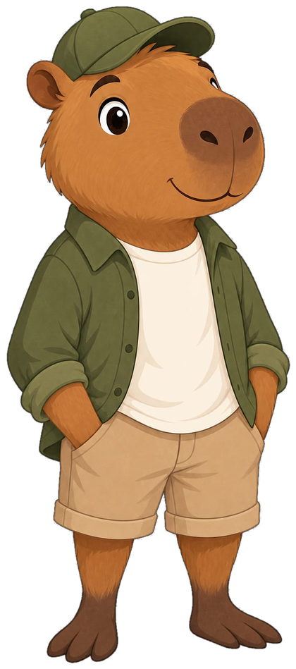

FUSL brengt overtollige voorraad van winkels samen op één plek — met persoonlijke begeleiding en korte lijnen tussen aanbieder en afnemer.

Capy laat je 6 kamerstijlen zien — klik de kamer die bij je past.
We tonen alleen aanbod in jouw stijl, bij winkels bij jou in de buurt.
Rechtstreeks contact met de winkel — korte lijnen, geen tussenpartij.